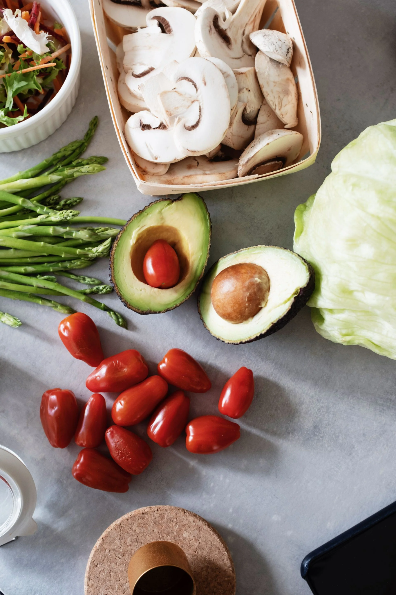

Imagem ilustrativa · não retrata o local ou a equipe
Imagem ilustrativa · não retrata o local ou a equipe01 / Nutrição clínica e esportiva · Cedral
Alimentação que acompanha os seus objetivos.
Daniela Folla. Alimentação, objetivos e rotina na mesma conversa. Acompanhamento nutricional para emagrecimento, ganho de massa e cuidado com a saúde.
- CRN 49999
- Nutrição clínica e esportiva
- Pós em suplementação esportiva
 Imagem ilustrativa · não retrata o local ou a equipe
Imagem ilustrativa · não retrata o local ou a equipe02 / Seu objetivo orienta o acompanhamento
Saúde, treino e escolhas à mesa.
Nutrição clínica
Acompanhamento alimentar considerando as necessidades individuais e o cuidado com a saúde.
Nutrição esportiva
Planejamento nutricional conectado à prática de atividade física e aos objetivos do acompanhamento.
Emagrecimento
Objetivo divulgado pela nutricionista, trabalhado por meio de acompanhamento individual.
Ganho de massa
Orientação nutricional para quem busca esse objetivo, considerando alimentação e rotina.
Suplementação esportiva
Área de pós-graduação apresentada por Daniela. A necessidade de suplementação é avaliada individualmente.
Doenças crônicas
Atendimento nutricional divulgado no perfil profissional do Doctoralia, em conjunto com o cuidado em saúde.

Imagem ilustrativa · não retrata o local ou a equipe03 / Trajetória & cuidado
Nutrição clínica encontra a vida esportiva.
Daniela Folla reúne nutrição clínica e esportiva em seu trabalho. Em sua apresentação, destaca a pós-graduação em suplementação esportiva e os objetivos de emagrecimento e ganho de massa. O acompanhamento é o espaço para alinhar alimentação, rotina e necessidades de saúde.
- Nutrição clínica e esportiva no mesmo acompanhamento
- Pós-graduação em suplementação esportiva divulgada pela profissional
- Atuação com objetivos de emagrecimento e ganho de massa
 Imagem ilustrativa · não retrata o local ou a equipe
Imagem ilustrativa · não retrata o local ou a equipe04 / Seu próximo passo
Vamos conversar?
Cedral/SP · CEP 15895-000Conversar pelo WhatsApp ↗
Ver mapa do endereço +
Consulte os horários disponíveis pelo WhatsApp.
Nutricionista · CRN 49999 · Cedral/SP